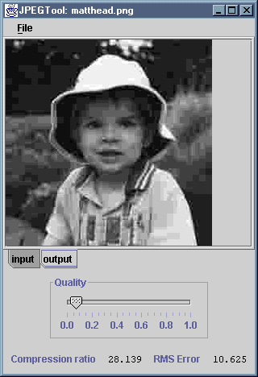

The JPEGTool application reads an image from a named file
and displays it in a tabbed pane. In the other pane, a version of the image
that has been subjected to one cycle of JPEG compression and decompression
is displayed. Compression quality, a value between 0.0 and 1.0, can be
varied using the slider beneath the tabbed display. The compression ratio
and RMS error for this quality setting are shown beneath the slider. A menu
is provided, allowing the output image and the difference between the input
and output images to be saved.
The application consists of one source file, JPEGTool.java,
which compiles into JPEGTool.class and
JPEGTool$Controls.class. The .class files are
available individually and as part of a single package, the JAR file
JPEGTool.jar. You can install the application by copying this
JAR file, along with either the MS-DOS batch file JPEGTool.bat
or the bash shell script JPEGTool.sh, as appropriate.
The batch file or script should be edited to reflect the new location of the
JAR file.